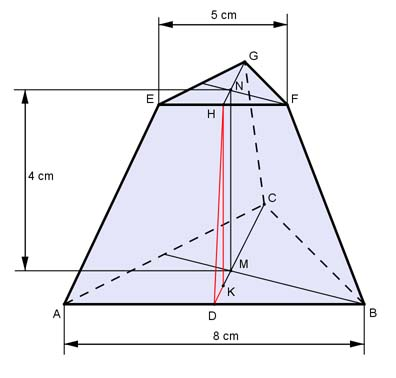
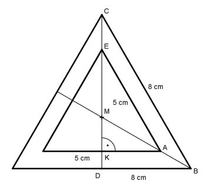
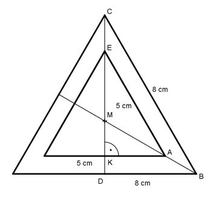

Aufgabe 255
Wie groß sind das Volumen V und die Mantelfläche M
des Pyramidenstumpfes mit gleichseitigen Dreiecken
als Grund- und Deckfläche, deren Mittelpunkte
senkrecht übereinander liegen?

Satz von Pythagoras im Dreieck ABC:
AC = AB = 8 cm
AD = AB/2 = 8 cm/2 = 4 cm
AC² = AD² + DC² | - AD²
DC² = AC² - AD² = 8² cm² - 4² cm² = 48 cm² |√
DC = 6,93 cm
AB * DC 8 cm * 6,93 cm
G1 = --------- = ---------------- = 27,7 cm²
2 2
Satz von Pythagoras im Dreieck EFG:
EF = EG = 5 cm
EH = EF/2 = 5 cm/2 = 2,5 cm
EG² = EH² + GH² | - EH²
GH² = EG² - EH² = 5² cm² - 2,5² cm² = 18,75 cm² |√
GH = 4,33 cm
EF * GH 5 cm * 4,33 cm
G2 = 6 * --------- = 6 * ----------------- = 10,8 cm²
2 2
Pyramidenstumpf:
 4
V = --- * (27,7 + 17,3 + 10,8) cm³
3
V = 74,4 cm³

M = 3 * Trapezfläche
Satz von Pythagoras im Dreieck DBC:
DB = 8 cm/2 = 4 cm
BC² = DB² + DC² |- DB²
DC² = BC² - DB² = 8² cm² - 4² cm² = 48 |√
DC = 6,93 = h
Die Höhe h wird durch M im Verhältnis 1 : 2 geteilt.
6,93
DM = ------ cm = 2,31 cm
3
Satz von Pythagoras im Dreieck KAE:
KA = 5 cm/2 = 2,5 cm
AE² = KA² + KE² |-KA²
KE² = AE² - KA² = 5² cm² - 2,5² cm² = 18,75 |√
KE = 4,33 = h1
Die Höhe h1 wird durch M im Verhältnis 1 : 2 geteilt.
4,33
KM = ------ cm = 1,44 cm
3
DK = DM - KM = 2,31 cm - 1,44 cm = 0,87 cm
Trapezhöhe hT
Satz von Pythagoras im Dreieck DKH:
KH = 4 cm
DH² = DK² + KH² = 0,87² cm² + 4² cm² = 16,76 cm² |√
DH = hT = 4,09 cm
AB + EF 8 cm + 5 cm
M = 3 * --------- * DH = 3 * -------------- * 4,09 cm
2 2
M = 79,8 cm²
4
V = --- * (27,7 + 17,3 + 10,8) cm³
3
V = 74,4 cm³

M = 3 * Trapezfläche
Satz von Pythagoras im Dreieck DBC:
DB = 8 cm/2 = 4 cm
BC² = DB² + DC² |- DB²
DC² = BC² - DB² = 8² cm² - 4² cm² = 48 |√
DC = 6,93 = h
Die Höhe h wird durch M im Verhältnis 1 : 2 geteilt.
6,93
DM = ------ cm = 2,31 cm
3
Satz von Pythagoras im Dreieck KAE:
KA = 5 cm/2 = 2,5 cm
AE² = KA² + KE² |-KA²
KE² = AE² - KA² = 5² cm² - 2,5² cm² = 18,75 |√
KE = 4,33 = h1
Die Höhe h1 wird durch M im Verhältnis 1 : 2 geteilt.
4,33
KM = ------ cm = 1,44 cm
3
DK = DM - KM = 2,31 cm - 1,44 cm = 0,87 cm
Trapezhöhe hT
Satz von Pythagoras im Dreieck DKH:
KH = 4 cm
DH² = DK² + KH² = 0,87² cm² + 4² cm² = 16,76 cm² |√
DH = hT = 4,09 cm
AB + EF 8 cm + 5 cm
M = 3 * --------- * DH = 3 * -------------- * 4,09 cm
2 2
M = 79,8 cm²